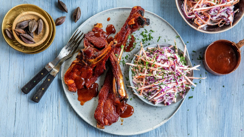

Forside > Oppgaver > Microdata > Eksempel 5
Pinnekjøtt med BBQ-saus
Oppskrift fra matprat.no
Tilberedningstid: ca 15 min
Koketid: Over 60 min
4.5/5 fra 54 vurderinger
Hva med en herlig variant av pinnekjøtt? Denne oppskriften med bbq-saus og en rødkål-slaw. Vi har brukt julekrydder i bbq-sausen, og det smaker utrolig godt! En kombinasjon av nellik og allehånde ringer julen inn.
Ingredienser
Bbq-saus:
500 g ketchup
250 g brunt sukker
1 dl sterk kaffe
1 ss tabasco
1/2 ts malt nellik
1/2 ts malt allehande
Rødkål-slaw:
200 g rødkål
2 stk gulrot
1/2 ts salt
1 stk rødløk
2 ss majones
3 ss lettrømme
1/2 ts kvernet pepper
1 ss finhakket frist timian
Instrukser
- Vann ut pinnekjøttet i rikelig med vann i ca. 30 timer, la det stå i romtemperatur.
- Legg en metallrist eller bjørkepinner uten bark i bunnen av en vid kjele. Fyll på vann til det står i høyde med risten. Legg pinnekjøttet over og sett på lokk. Damp pinnekjøttet på svak varme i ca. 3 timer. Pass på så det ikke koker tørt, fyll eventuelt på med mer vann.
- Når kjøttet er ferdig kokt legger du det på benken til det er avkjølt.
- Bruk en skarp kniv eller ostehøvel og skjær rødkål i fine strimler. Skrell gulrøttene og skjær dem i tynne strimler. Bruk gjerne et rivjern.
- Ha strimlene i en bolle og strø på salt. Bruk gjerne gummihansker på hendene og gni kålen og gulrøttene sammen med saltet, slik får du en noe mykere grønnsaker. Hell av eventuelt vann som samler seg i bunnen av skålen.
- Del rødløk i to, og skjær den i tynne skiver. Bland løken med rødkål og gulrot.
- Bland de øvrige ingrediensene i en bolle for seg, og deretter inn i kålblandingen. La rødkål-slawen stå i kjøleskap frem til servering.
- Løs opp sukker i varm kaffe. Tilsett ketchup og smak til bbq-sausen med tabasco. Tilsett krydder og la stå i minst 10 minutter.
- Legg pinnekjøttet på et stekebrett med bakepapir. Smør inn pinnekjøttet med bbq-sausen og grill det på høy varme til de blir gylne.
Server med rødkål-slaw og litt ekstra bbq-saus for de som vil ha det.